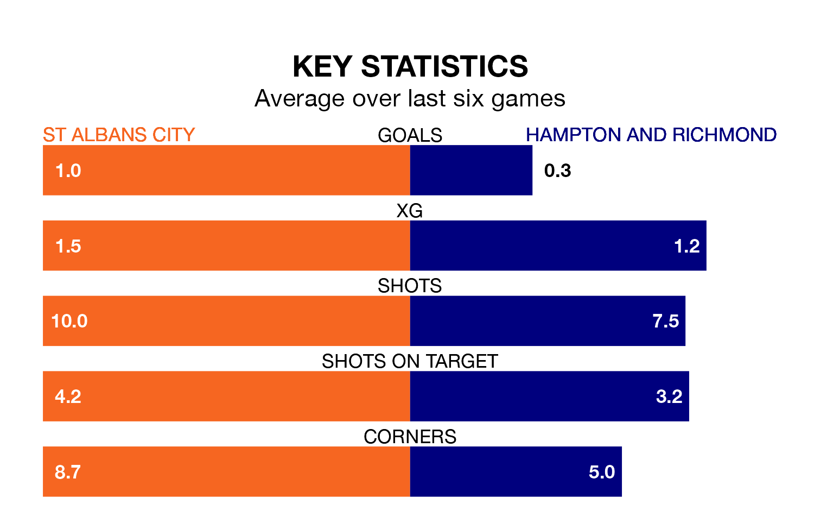

Hampton and Richmond travel to Clarence Park looking to secure a first win in seven National League South games against St Albans City on late Tuesday.
Hampton & Richmond have lost three and drawn three matches since they last earned three points – against Hemel Hempstead Town on March 16.
They face a St Albans side who have won just one and drawn one over that time.
With 72 goals in 43 games so far this season, St Albans are scoring more than average in the league with 1.7 goals per game. And they are conceding at an average rate, letting in 61 goals at a rate of 1.4 per game.
Hampton & Richmond, meanwhile, are average scorers, with 1.4 goals per game. They have conceded 1.2 goals per game.
In the last 10 years, St Albans and Hampton & Richmond have played each other on 15 occasions. They won six each, and they drew three times.
On average, St Albans scored 1.5 goals and Hampton & Richmond 1.3 in those matches.
Their last meeting was on February 6, when they played out a 0-0 draw.
The visitors are seventh in the table after 43 games, of which they have won 19 and drawn 12, earning 69 points.
City are three places behind Hampton & Richmond in 10th, with 19 wins and seven draws putting them on 64 points.
St Albans's last match was on April 6, a 1-0 loss against Chippenham Town.
Hampton & Richmond lost 1-0 against Bath City last time out, on April 9.
Updated: 10:01 (UTC), 12/04/24